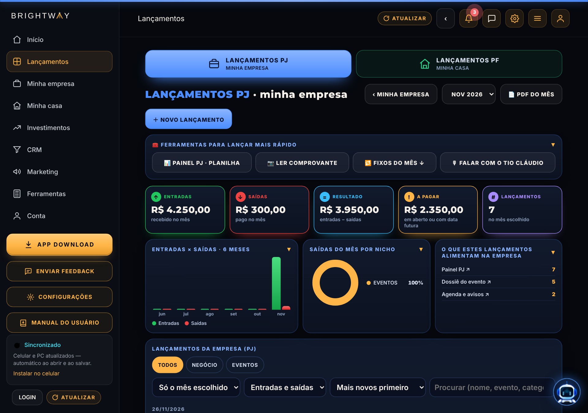

04 · Primeiros passos
Lançamentos PJ e PF
A página Lançamentos tem duas abas: LANÇAMENTOS PJ (a empresa, em azul) e LANÇAMENTOS PF (a casa, em verde). O que é lançado numa aba nunca aparece na outra: os dados da empresa e os da casa ficam separados.

Aba PJ: números do mês da empresa, gráficos e a lista. A faixa colorida no alto da página mostra em qual ambiente você está.
Lançar
- 1Escolha a aba e toque em ＋ NOVO LANÇAMENTO. Na PJ: GASTEI, RECEBI e CACHÊ DA EQUIPE (do negócio ou de um evento). Na PF: GASTEI, RECEBI, CONTA A PAGAR, GUARDEI e INVESTI.
- 2Digite o valor, a data e o que foi. A faixa mostra para onde vai e o que alimenta. ✓ LANÇAR ou LANÇAR E FAZER OUTRO.
A lista
- ✎ALTERAR muda valor, data e nome. PARA ONDE FOI troca o lugar dentro do mesmo ambiente (um gasto do negócio vira de um evento; um gasto da casa vira conta a pagar). ✕ exclui, com confirmação.
- ⚙CACHÊ DA EQUIPE: vermelho NÃO PAGO até você pagar; ao tocar vira verde PAGO ✓ e custo do evento. Os FIXOS DO NEGÓCIO (aluguel, internet) ficam no fim da aba PJ. 📄 PDF DO MÊS sai só com o ambiente aberto.